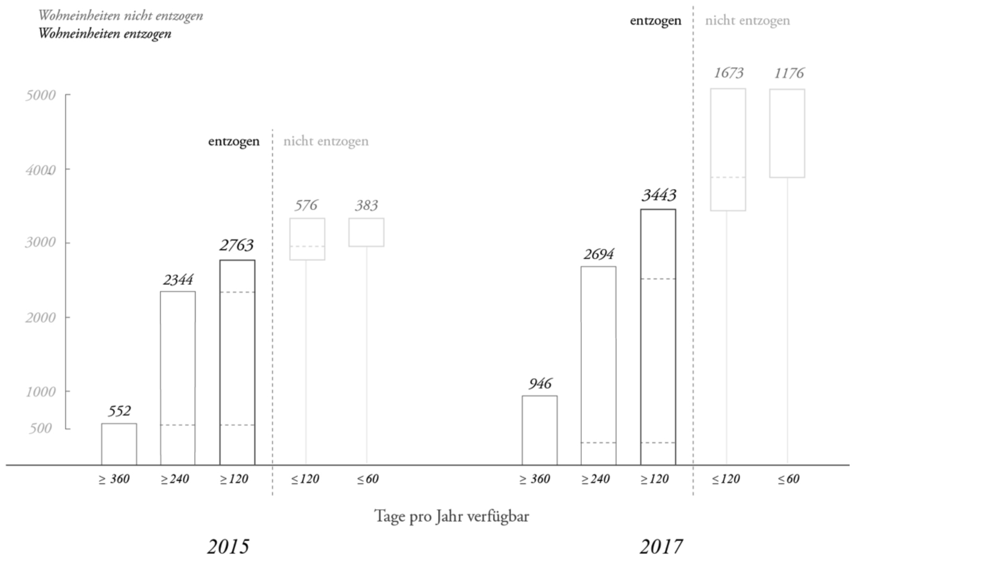
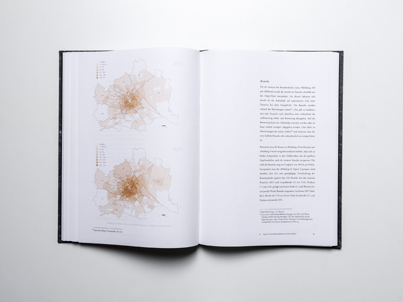
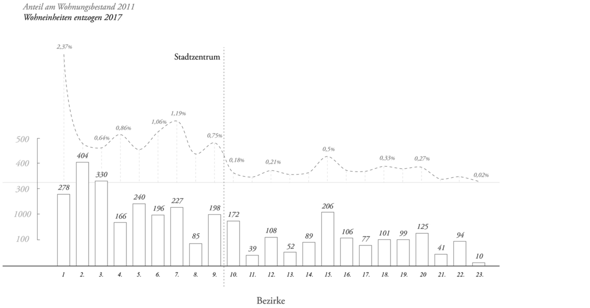
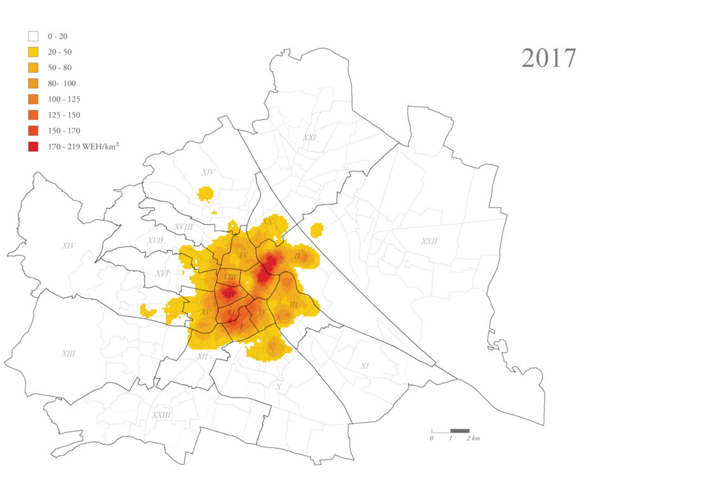
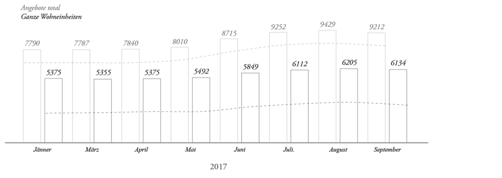
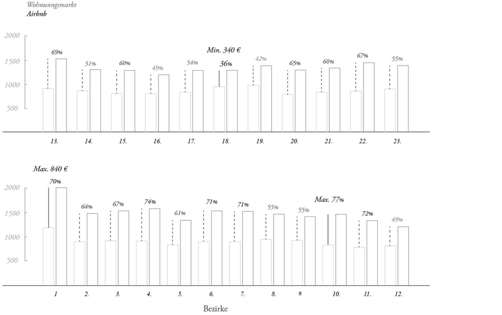

Masterstudium Raumforschung und Raumordnung an der Universität Wien – 2014 bis 2018
Während meines zweiten Studiums habe ich meinen Horizont als Architekt und Planer mit Hilfe der Raumforschung und Raumordnung erweitern können. Damit verbunden sind die Bereiche Regionalentwicklung, örtliche und
überörtliche Raumordnung,
sektorale Planung des Bundes, der Länder oder der Europäischen Union sowie angewandte Geoinformatik.
Mein besonderes Interesse gilt vor allem räumlichen Analysemethoden sowie dem Wohnungsmarkt und der Immobilienwirtschaft. Exemplarisch hierfür findet sich im Folgenden meine Masterarbeit aus der Arbeitsgruppe Angewandte Geographie,
Raumforschung und Raumordnung.
Airbnb und dessen räumliche Auswirkungen auf den Wiener Wohnungsmarkts
Eine Analyse des Zusammenhangs zwischen Airbnb-Angebot und dem Angebot des Wiener Wohnungsmarkt.

Ein Blick in das Buch – zur vollständigen Arbeit gelangen Sie hier.
Zum Thema
Das weltweite, rapide Wachstum des Airbnb-Angebots hat in den vergangenen Jahren eine Diskussion um die damit verbundene Umnutzung von Wohnraum und eine dadurch entstehende, potentielle Belastung für den Wohnungsmarkt ausgelöst. Besonders
davon betroffen sind die ohnehin unausgeglichenen Wohnungsmärkte der Tourismusmetropolen in Europa und Nordamerika. Hier vorherrschende Situationen wie etwa Wohnungsknappheit und steigende Mieten wurden durch das Airbnb-Angebot zumindest
teilweise verstärkt. Trotz einer öffentlichen Diskussion dieses Themas in Wien, ist eine tiefgehende, wissenschaftliche Betrachtung nach wie vor kaum vorhanden. Die vorliegende Masterarbeit geht daher primär der Frage nach, ob beziehungsweise
welche Wirkungszusammenhänge zwischen dem Airbnb-Angebot und dem Angebot des Wiener Wohnungsmarkts bestehen. Die konkrete Forschungsfrage lautet:
Welche Auswirkungen hat das Angebot von Airbnb auf die
Angebotsseite des Wiener Wohnungsmarkts?
Die Entwicklung des Airbnb-Angebots in Wien wurde im Zeitraum von 2015 bis 2017 räumlich analysiert
Gang der Untersuchung
Für die Operationalisierung der Fragestellung wurden zwei empirisch bearbeitbare Teilaspekte unterschieden:
Zum einen wurde die räumliche Verteilung und Entwicklung des Airbnb-Angebots in Wien zu zwei Zeitpunkten mithilfe einer GIS-gestützten räumlichen Analyse erhoben. Neben der Erhebung und Analyse der Angebotsstruktur auf Bezirksebene konnte definiert werden, wie viele Wohnungen dem Wohnungsmarkt durch Airbnb entzogen wurden. Zusätzlich wurde diese Erhebung mit Erkenntnissen von interviewten ExpertInnen ergänzt.
Entzogene Wohneinheiten: Hierfür wurde die Eigenschaft der Verfügbarkeit pro Jahr einer Wohnung als Parameter herangezogen, ungeachtet dessen, ob diese in diesem Zeitraum tatsächlich von Airbnb-NutzerInnen gebucht wurden, weil die reine Möglichkeit einer Buchung als ausreichend erachtet wird. Als Richtwert wird eine Grenze von mehr als 120 Tagen angenommen.
Zum anderen wurde darauf aufbauend die Untersuchung eines möglichen Zusammenhangs des Airbnb-Angebots auf das Angebot des Wohnungsmarkts durchgeführt. Hierbei wurden im Sinne der Forschungsfrage zwischen zwei miteinander in Beziehung stehenden Faktoren der Angebotsseite des Wohnungsmarkts unterschieden – der Entwicklung der Marktmietpreise und des quantitativen Wohnungsangebots.
Die räumliche Analyse der unterschiedlichen Aspekte des Airbnb-Angebots bildet die Grundlage für das weitere Vorgehen
Für eine statistische Untersuchung eines eventuellen Zusammenhangs der freien Marktmietpreisen wurde eine bivariate Korrelationsanalyse angewandt. Eine multivariante Regressionsanalyse, die alle preisbildenden Einflussfaktoren berücksichtigt, war aufgrund der unzureichenden Datengrundlage nicht durchführbar. Zur Abklärung der Auswirkungen auf das Wohnungsangebot erwies sich die Methode der qualitativen ExpertInneninterviews als einzig probates Mittel, Einblicke in das Modell der Wohnungsleerstandserhebung zu erlangen. Dieses Modell kann eine Aussage über die Auswirkungen der Wohnungsumnutzungen durch Airbnb auf die Wohnungsreserven Wiens treffen und somit eine Antwort auf diesen Teil der Frage geben. Durch die Befragung von ExpertInnen konnten sowohl normative Aussagen in Bezug auf das generelle Thema in die Arbeit einfließen, als auch die Forschungsfrage qualitativ durch ExpertInnen beantwortet werden.
Ausgehend von einem übergeordneten theoretischen Rahmen, der Ökonomie des Teilens sowie den Besonderheiten des Wohnungs- und Immobilienmarkts, können mithilfe einer Zusammenführung der empirischen Ergebnisse etwaige Auswirkungen des Airbnb-Angebots auf das Wohnungsangebot Wiens sowohl qualitativ als auch quantitativ in einem räumlichen Kontext evaluiert und diskutiert werden. Unter Einschließung der rechtlichen Rahmenbedingungen für das Vermieten auf Airbnb konnten die wesentlichen Implikationen der Entwicklung des Airbnb-Angebots für den Wiener Wohnungsmarkt identifiziert werden.
Zentrale Ergebnisse
Die Kombination der gewonnenen Ergebnisse hat gezeigt, dass das Ausmaß des Airbnb-Angebots mit Ende des Untersuchungszeitraums keinen Einfluss im Sinne einer Verzerrung der Angebotsseite des Wiener Wohnungsmarkts hat. Dies liegt in erster Linie daran, dass die Anzahl der entzogenen Wohneinheiten zu gering ist, um das Wohnungsangebot zu beeinflussen. Ein möglicher Einfluss auf die Entwicklung der Marktmietpreise konnte infolge der vorhandenen, zu grob skalierten Datengrundlage, statistisch weder falsifiziert noch verifiziert werden. Aufgrund dessen, dass der Einfluss auf das quantitative Wohnungsangebot Wiens minimal ist und keine Korrelation zwischen den Entwicklungen Airbnbs und der Marktmietpreise vorliegt, sind Auswirkungen Airbnbs auf die Marktmietpreise im Untersuchungszeitraum jedoch unwahrscheinlich. Die Ergebnisse haben jedoch gezeigt, dass die derzeitigen Tendenzen und Entwicklungen einige andere wesentliche Implikationen für den Wiener Wohnungsmarkt beziehungsweise ein Potential für eine zukünftige Verzerrung der Marktsituation darstellen:
Räumliche Konzentration
Die Untersuchung hat gezeigt, dass die Stadt Wien mit der Wohnungsleerstandserhebung ein geeignetes Mittel besitzt, die dem Markt zur Verfügung stehende Mobilitätsreserve zu eruieren, um so zumindest langfristig vorausschauend eine notwendige Neubauleistung zu koordinieren. Die räumliche Konzentration des Airbnb-Angebots auf die inneren Bezirke, in Kombination mit den rechtlichen Rahmenbedingungen führen aber dazu, dass im Falle eines Entzugs von Wohnraum nur gewisse, preislich höhere Teilsegmente des privaten Mietwohnungsmarkts betroffen sind und nicht leistbares oder gefördertes Wohnen – jener Sektor, der für die Stadt als Bauträger relevant ist.
Entzogene Wohneinheiten nach Bezirk inkl. Anteil am Wohnungsbestand 2011 – Datenquelle: Cox 2017a; Stadt Wien 2017c
Kleinräumliche Auswirkungen
Die starke Konzentration des Airbnb-Angebots führt dazu, dass sich die Auswirkungen auf das Wohnungsangebot beziehungsweise die Mietpreise, wenn vorhanden, höchstwahrscheinlich sehr kleinräumlich auswirken und eventuell unerwünschte Effekte für AnrainerInnen der betroffenen Gebiete haben. Eine Analyse dieser Auswirkungen müsste deshalb mit räumlich sehr fein skalierten, umfangreichen Daten (auf Ebene der Zählbezirke oder Baublöcke) durchgeführt werden, welche zum jetzigen Stand nicht öffentlich verfügbar sind.
An mehreren Innenstadtlagen ist das Angebot besonders stark konzentriert – Datenquelle: Cox 2017a
Wachstum
Es konnte beobachtet werden, dass das Wachstum nach einer kleinen Stagnation von Anfang bis Mitte des Jahres 2017 weiter anhält. Wie sich das Ausmaß des Airbnb-Angebots weiter entwickelt, ist ungewiss. Bei weiterem Wachstum und gleichzeitigen nicht angemessenen Reaktionen besitzt diese Entwicklung das Potential, zukünftig Auswirkung auf den Wohnungsmarkt durch Airbnb-verursachte Wohnungsumnutzungen zu erzeugen.
Das Airbnb-Angebot ist im Untersuchungszeitraum insgesamt um 43% gestiegen – Anfang des Jahres 2017 blieb das Angebot jedoch konstant – Datenquellen: Slee 2017; Cox 2017a
Höhere Einnahmen
Die durch die Vermietung auf Airbnb zu erzielenden Mehrgewinne gegenüber dem regulären Vermieten können ein möglicher Anreiz für die Nutzung Airbnbs und ähnlicher Plattformen sein. Aufgrund der vergleichbar niedrigen Mieten in verkehrstechnisch gut ans Zentrum angebundenen Randbezirken, könnte sich das Airbnb-Angebot, vorausgesetzt eines anhaltenden Wachstums, auf diese Bezirke ausweiten und so wiederum den Wohnungsmarkt auch in preislich niedrigeren räumlichen Marktsegmenten beeinflussen.
Vergleich Airbnb- vs. Mieteinnahmen, in €/m2 – Datenquellen: Seidl et al. 2017
Vorgeschlagene Handlungen
Basierend auf den zentralen Erkenntnissen dieser Arbeit wird empfohlen, dass einerseits eine generelle Haltung gegenüber Airbnb und Co. sowie Zielsetzungen für ein zukünftiges Handeln definiert werden müssen, andererseits mögliche Maßnahmen überlegt werden sollten, um negative Entwicklungen frühzeitig zu erkennen und angemessen regulieren zu können.
Die dafür vorgeschlagenen Handlungsempfehlungen basieren neben den Erkenntnissen der Arbeit auf dem aktuellen Diskurs auf europäischer Ebene über die Regulierung der Ökonomie des Teilens
und ihrer
unterschiedlichen VertreterInnen. Die Zielsetzung hierfür ist eine Ausgewogenheit zwischen freien Marktmechanismen und fairen Bedingungen für alle AkteurInnen des Wohnungsmarkts.
Der Grundtenor dieser Empfehlungen ist, dass bestehende
Gesetze nur bedingt in der Lage sind, dynamische Entwicklungen des Airbnb-Angebots wirklich zielgerichtet zu regulieren. Deshalb vertritt diese Arbeit den Standpunkt,
dass für digitale
P2P-Formen des Wirtschaftens auch entsprechende anpassungsfähige Formen der Regulierung benötigt werden. Im Gegensatz zu starren Regulierungen sollten festgelegte Ziele der Stadt Wien mithilfe eines adaptiven Rahmens im Sinne einer smarten
Regulierung erreicht werden, welcher auf einem datengestützten Evaluierungssystem basiert. So könnte, neben anderen vorgeschlagenen Möglichkeiten einer zukünftigen Regulierung, beispielsweise eine anpassungsfähige Preisbeschränkung der
höchstmöglichen Mietpreise auf Airbnb umgesetzt werden, um die Gewinnspanne gegenüber dem herkömmlichen Vermieten zu reduzieren. Grundvoraussetzung hierfür ist die Kooperation zwischen der Stadt Wien und Airbnb. Es bleibt fraglich, ob sich
beide Parteien in Zukunft einigen können und das Unternehmen wirklich bereit ist, die Daten seiner NutzerInnen mit der Stadt zu teilen, um so die Kontrolle der Einhaltung von Gesetzen und Steuerpflichten nach den Vorstellungen Wiens zu
gewährleisten.
Das Buch
Wien 2018
Betreut von Univ.-Prof. Dr. Hans-Heinrich Blotevogel, Institut für Institut für Geographie und Regionalforschung
Fotodokumentation von Simon
Oberhofer